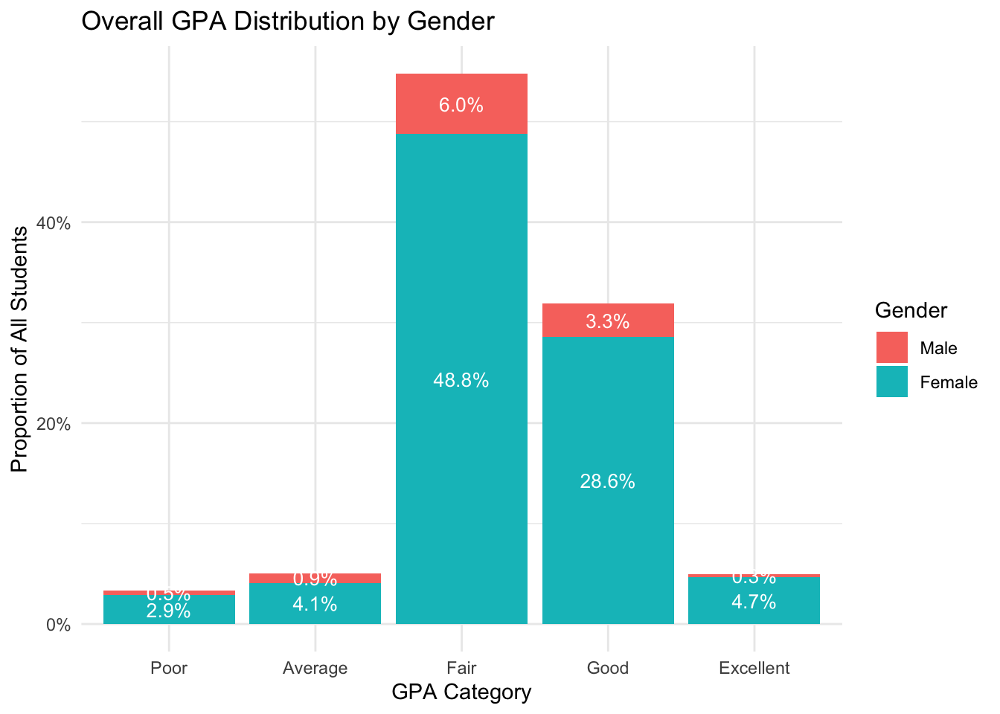
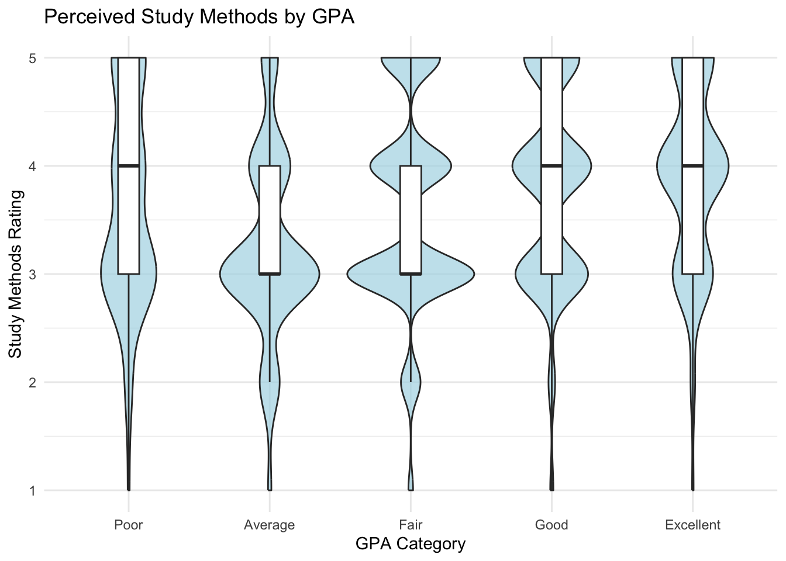
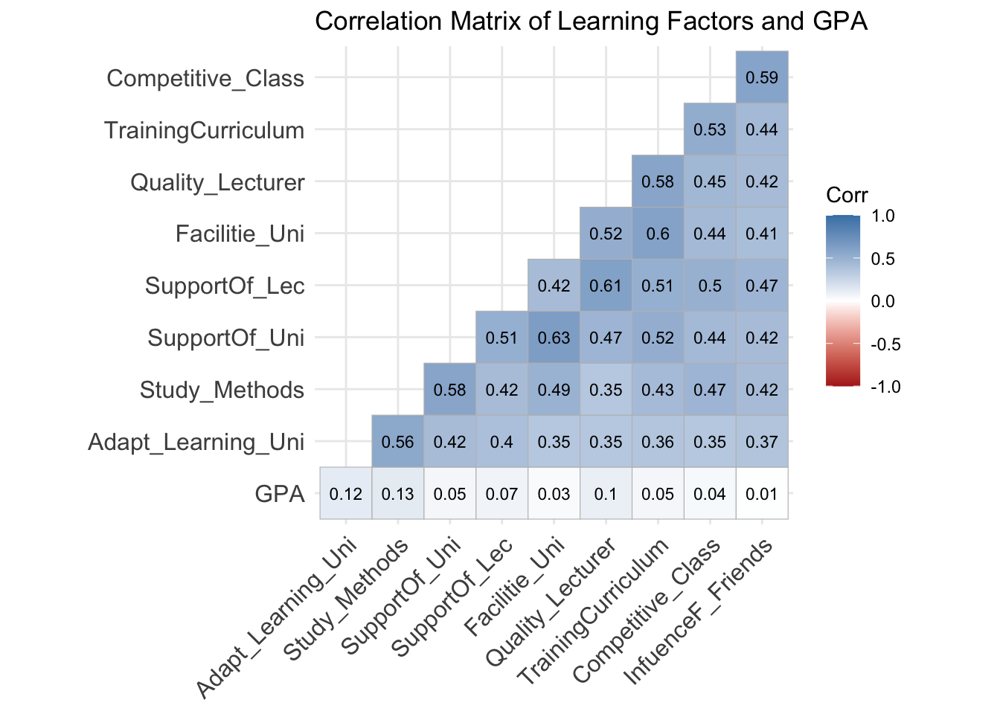
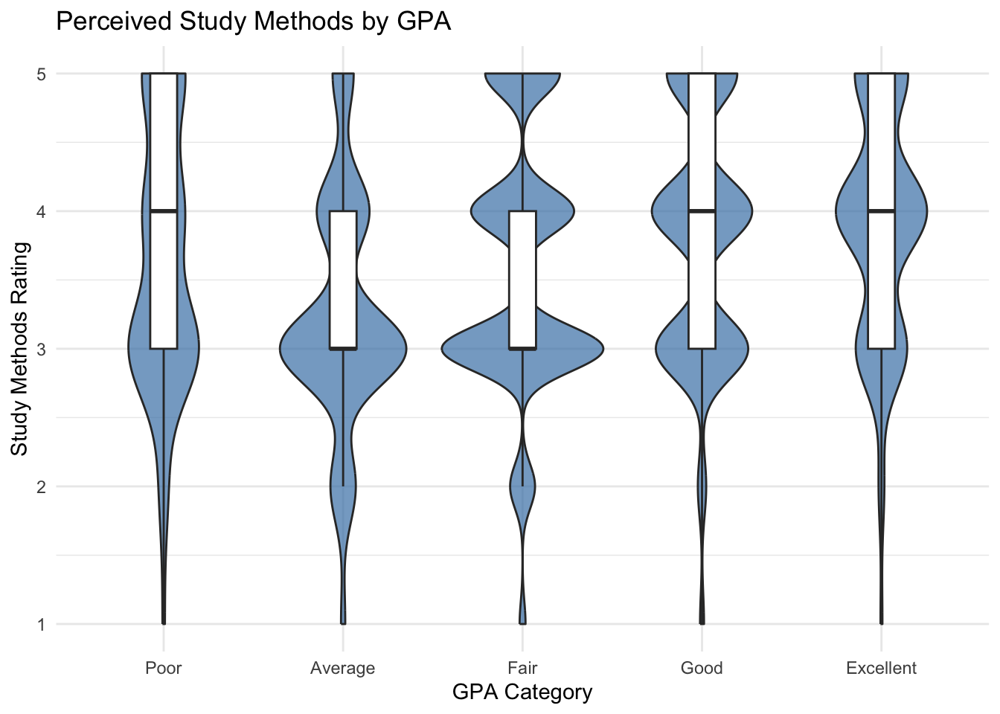
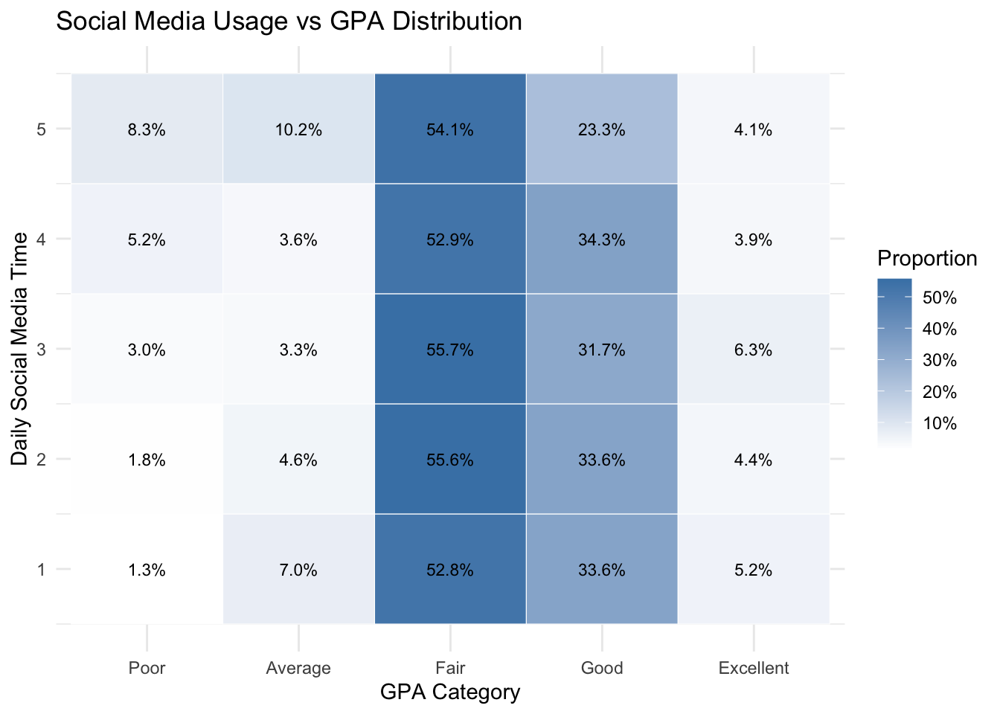

pacman::p_load(tidyverse, ggcorrplot, ggridges,
scales)Take-Home Exercise 1

Overview
Introduction: This project applies visual analytics techniques to explore factors associated with student learning outcomes using a large-scale survey dataset from the University of Education, Vietnam National University, Hanoi. The dataset captures students demographic characteristics, study behaviors, time allocation, and perceptions of institutional and social support, alongside their academic performance measured by GPA.
Objective: Use visually driven analysis to uncover and communicate key patterns in how individual, social, and institutional factors relate to student outcomes.
The analysis emphasizes exploratory visualization to support reasoning, comparison, and interpretation. Using R, ggplot2, and selected visualization extensions, the project identifies a set of key observations that highlight meaningful relationships and distributions within the data, demonstrating how visual analytics can help us understand of educational processes and learning environments.
Getting Started
Install and Launch R packages
The code chunk below uses p_load() of pacman package to check if tidyverse packages are installed in the computer. If they are, then they will be launched into R.
| Package | Description |
|---|---|
| tidyverse | A collection of R packages (including ggplot2, dplyr, and tidyr) used for data cleaning, transformation, and visualization. |
| ggcorrplot | Used to visualize correlation matrices in a graphical format. |
| ggridges | Provides ridgeplots that allow comparison of distributions across multiple groups. |
| scales | Enhances visualizations by formatting axes and legends (percentages, labels, breaks, etc.). |
Data Preprocessing
The original dataset was provided as an CSV file containing numerically coded demographic, behavioral, and perception variables.
Data preparation was conducted in R.
All categorical and ordinal variables were explicitly recoded as factors with meaningful labels based on the survey documentation (e.g., GPA levels, Likert-scale perceptions, and time-use categories).
Ordinal variables were converted to ordered factors to preserve their inherent ranking.
No observations were removed during preprocessing, as the dataset contained complete responses.
All transformations and analytical visualizations are fully reproducible within this Quarto document.
learning_data <- read_csv("data/database.csv")learning_data <- learning_data %>%
mutate(
GPA = factor(
GPA,
levels = 1:5,
labels = c("Poor", "Average", "Fair", "Good", "Excellent"),
ordered = TRUE
),
Gender = factor(
Gender,
levels = c(1, 2),
labels = c("Male", "Female")
),
Study_Methods = factor(Study_Methods, ordered = TRUE),
Quality_Lecturer = factor(Quality_Lecturer, ordered = TRUE),
TrainingCurriculum = factor(TrainingCurriculum, ordered = TRUE)
)Filtering Relevant Variables
Out of the 22 variables available in the original dataset, a subset of ## key academic, behavioral, and demographic variables was elected to address the analytical questions. These fields were chosen because they directly relate to student performance, learning behavior and institutional context. Together, they provide a structured framework to examine how individual effort, environmental factors, and socioeconomic context have an impact on academic outcomes.
| Variable | Description |
|---|---|
| GPA | Ordinal academic performance category ranging from Poor to Excellent. |
| Gender | Binary variable (Male/Female). |
| Time_Studying | Number of hours spent studying per day. |
| Time_SocialMedia | Daily time allocated to social media usage. |
| Study_Methods | Self-reported effectiveness or quality of study strategies. |
| Quality_Lecturer | Student’s perception of teaching effectiveness. |
| Adapt_Learning_Uni | Perception of student’s adaptation to university. |
| Study_Methods | Effectiveness and organization of student’s study strategies and learning approaches. |
| SupportOf_Uni | Perception of academic and administrative support. |
| SupportOf_Lec | Level of guidance, accessibility, and academic assistance from lecturers. |
| Facilitie_Uni | Adequacy and quality of university facilities. |
| Quality_Lecturer | Perception of teaching effectiveness. |
| TrainingCurriculum | Perceived relevance and structure of the curriculum. |
| Competitive_Class | Perceived level of academic competition in the classroom. |
| InfuenceF_Friends | Perceived influence of peers and friends on academic motivation and performance. |
Key Observations
1. GPA Distribution by Gender
learning_data %>%
count(GPA, Gender) %>%
mutate(prop = n / sum(n)) %>%
ggplot(aes(x = GPA, y = prop, fill = Gender)) +
geom_col() +
geom_text(
aes(label = scales::percent(prop, accuracy = 0.1)),
position = position_stack(vjust = 0.5),
size = 3.5,
color = "white"
) +
scale_y_continuous(labels = scales::percent) +
labs(
title = "Overall GPA Distribution by Gender",
x = "GPA Category",
y = "Proportion of All Students",
fill = "Gender"
) +
theme_minimal()
This graph show us the distribution of GPA categories segmented by gender. Overall, most students cluster within the “Fair” and “Good” categories, with relatively few in the “Poor” or “Excellent” extremes. When segmented, female students show a slightly higher proportional concentration in the upper GPA categories, particularly “Good,” while male students appear somewhat more represented in the lower GPA ranges. However, the overall pattern remains similar across both groups, indicating that gender differences in academic outcomes are present but not pronounced. Visually, the chart suggests modest differences rather than structural disparities in performance between genders.
2. Study Time vs GPA
learning_data %>%
count(Time_Studying, GPA) %>%
group_by(Time_Studying) %>%
mutate(prop = n / sum(n)) %>%
ggplot(aes(x = GPA, y = Time_Studying, fill = prop)) +
geom_tile(color = "white") +
geom_text(
aes(label = scales::percent(prop, accuracy = 0.1)),
size = 3
) +
scale_fill_gradient(
low = "white",
high = "steelblue",
labels = scales::percent
) +
labs(
title = "Study Time vs GPA Distribution",
x = "GPA Category",
y = "Average Daily Study Time",
fill = "Proportion"
) +
theme_minimal()
This heatmap visualization represents the distribution of GPA categories across different levels of daily study time. While higher study time categories show a greater concentration of “Good” and “Excellent” outcomes, the relationship is not strictly linear.
Moderate study time also display substantial representation in upper GPA categories, suggesting diminishing returns beyond a certain limit. (Students reporting extremely high study time do not exclusively dominate the top GPA category) Indicating that time investment alone does not fully determine performance.
4. Study Methods vs GPA
ggplot(learning_data, aes(x = GPA, y = as.numeric(Study_Methods))) +
geom_violin(fill = "lightblue", alpha = 0.7) +
geom_boxplot(width = 0.15, outlier.shape = NA) +
labs(
title = "Perceived Study Methods by GPA",
x = "GPA Category",
y = "Study Methods Rating"
) +
theme_minimal()
5. Lecturer Quality vs GPA
ggplot(learning_data, aes(
x = as.numeric(Quality_Lecturer),
y = GPA,
fill = GPA
)) +
geom_density_ridges(alpha = 0.7, scale = 1.1) +
labs(
title = "Perceived Lecturer Quality Across GPA Levels",
x = "Lecturer Quality Rating",
y = "GPA Category"
) +
theme_minimal() +
theme(legend.position = "none")
The ridgeline plot reveals a gradual upward shift in perceived lecturer quality as GPA increases. Higher-performing students tend to report stronger and more concentrated evaluations of lecturer quality, while lower GPA categories display broader and slightly lower distributions. The compression of variance among top GPA groups suggests greater consensus in their perceptions. The visual progression across GPA levels supports the interpretation that instructional quality contributes positively to student outcomes, but it operates within a broader ecosystem of academic and personal influences. Overall, the pattern highlights lecturer quality as a stabilizing rather than singular factor in performance differentiation.
6. Correlation Matrix of Learning Factors
group_b <- learning_data %>%
select(
GPA,
Adapt_Learning_Uni,
Study_Methods,
SupportOf_Uni,
SupportOf_Lec,
Facilitie_Uni,
Quality_Lecturer,
TrainingCurriculum,
Competitive_Class,
InfuenceF_Friends
) %>%
mutate(across(everything(), as.numeric))
corr_matrix <- cor(group_b, use = "complete.obs")
ggcorrplot(
corr_matrix,
type = "lower",
lab = TRUE,
lab_size = 3,
colors = c("firebrick", "white", "steelblue")
) +
labs(title = "Correlation Matrix of Learning Factors and GPA")
This correlation graph summarizes the relationships among institutional, behavioral, and social factors alongside GPA. Strong positive correlations are visible among institutional variables such as lecturer quality, university support, and curriculum suitability, suggesting that students perceive these elements as interconnected.
We can see that correlations between these factors and GPA are positive but comparatively modest, which indicates that academic performance is influenced by multiple dimensions rather than a single dominant variable.
ggplot(learning_data,
aes(x = GPA, y = as.numeric(Competitive_Class))) +
geom_boxplot(fill = "steelblue") +
labs(
title = "Perceived Classroom Competition by GPA",
x = "GPA Category",
y = "Competition Level"
) +
theme_minimal()
This plot compares perceived classroom competition levels across GPA categories. Median competition ratings tend to increase slightly with higher GPA levels, suggesting that academically stronger students may experience or interpret competitive environments more positively.
We can see variability is greater among lower GPA groups, indicating less consistent perceptions of competition. While moderate competition appears common across all GPA levels, extreme competition levels are less dominant among lower-performing students. The visualization suggests that competition may function as a motivating factor for some students, but its influence likely depends on individual adaptability and study strategies.
3. Social Media Usage vs GPA

This second heatmap illustrates the distribution of GPA categories across levels of daily social media usage. Higher concentrations of “Good” and “Excellent” GPAs appear among students reporting moderate or lower usage, while heavier usage categories show a relatively larger presence in middle GPA tiers. However, the relationship is not completely linear. Overall, the pattern suggests that balanced time allocation may be more relevant than absolute restriction.